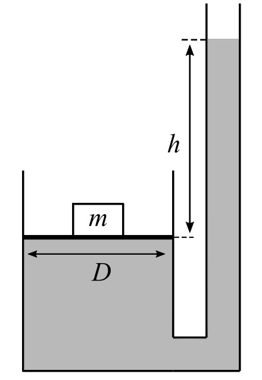
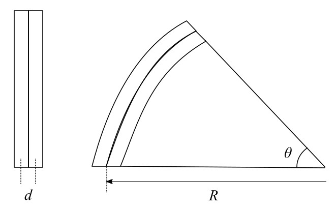

2. Lämpöoppi
Tärkeitä asioita lämpöopista ovat paine, lämpölaajeneminen, ideaalinen kaasulaki, sekä termodynamiikan ensimmäinen- ja toinen pääsääntö. Tehtävissä saa käyttää valitsemaasi kaavakokelmaa (esim. MAOL) sekä trigonometrista taulukkoa.

Tarkastellaan kuvan mukaista öljytäytteistä hydraulista nostinta, jolla pyritään nostamaan \(m\) painoista laatikkoa. Nostimen mäntä on ympyränmuotoinen, jolla on läpimitta \(D\). Kuinka suuri on kuvan osoittama korkeus \(h\), kun laatikko juuri ja juuri alkaa nousemaan ylöspäin?
Ratkaisu 2.1
Sukelluskello on laite, jonka sisälle jää ilmatasku kun se lasketaan veteen. Tarkastellaan sukelluskelloa, joka on \(2{,}70\,\mathrm{m}\) korkean sylinterin muotoinen, jonka pohja on avoin ja päällisosa on suljettu. Kellon sisällä oleva on ilma on alussa \(25\,\mathrm{^\circ C}\) lämpötilassa. Merivedessä lämpötila laskee noin \(0{,}233\,\mathrm{^\circ C}\) astetta jokaista metriä kohden alaspäin mentäessa.
a) Kelloa aletaan laskemaan meriveteen, kunnes se on \(90\,\mathrm{m}\) syvyydessä. Kuinka korkealle merivesi nousee sukelluskellossa, kun tiheys pysyy pysyvän vakiona \(\rho\approx 1{,}033\,\mathrm{\frac{g}{cm^3}}\)?
b) Sukeltajaa alkaa ärsyttämään vesimäärän suuruus kellon sisällä. Kuinka suureen paineeseen kello tulee paineistaa, jotta kaikki sisääntullut merivesi poistuisi kellosta?
Ratkaisu 2.2
Kaksoismetalliliuskia käytetään usein mm. Termostaateissa ja lämpömittareissa. Niiden idea perustuu lämpötila muutoksen aiheuttamaan mekaaniseen siirtymään. Rakenteeltaan liouska koostuu kahdesta eri metallista, jotka ovat kiinnitetty yhteen. Metalleilla on eri lämpölaajenemiskertoimet. Tällöin kun lämpötila muuttuu \(\Delta T\) verran liuskat laajenevat erilailla. Tällöin olennaisesti liuskien pituukset muuttuu erisuuriksi, jolloin ne yhdessä taipuu kaareksi. Tarkastellaan messinki- ja teräsliuskaa, jotka molemmat ovat leikattu \(\ell\) pituisiksi. Tämän jälkeen ne ovat kiinnitetty yhteen siten, että niiden keskiosat ovat \(d\) mittaisella etäisyydellä toisistaan, jonka jälkeen liuskien päädyt ovat hitsattu yhteen. Lämpötilaa nostetaan \(\Delta T\) verran, jolloin kaksoismetalliliuska taittuu kaarelle, jonka kulma on \(\theta\).

a) Jos messingin lämpölaajenemiskerroin \(\alpha_m = 18{,}70\cdot10^{-6} \,\mathrm{\frac{1}{^\circ C}}\) ja teräksen \(\alpha_t = 11{,}70\cdot10^{-6} \,\mathrm{\frac{1}{^\circ C}}\), kummasta materiaalista ulompi levy pitää olla tehty?
b) Johda lauseke taipumiskulmalle \(\theta\).
c) Olkoon liuskien alkupituus \(\ell = 10\,\mathrm{cm}\) ja keskiöiden etäisyys \(d = 1\cdot10^{-3}\,\mathrm{cm}\). Kuinka paljon kaksoismetalliliuskan lämpötilaa tulee nostaa, jotta siitä muodostuisi ympyrä? Laske ympyrän säde \(R\).
Ratkaisu 2.3
Vedenkeittimeen laitetaan \( 250 \) grammaa vettä, joka on lämpötilassa \(20\,\mathrm{^\circ C}\) ja \(350\) grammaa jäätä, joka on lämpötilassa \( 0\,\mathrm{^\circ C}\). Vedenkeitin laitetaan päälle kun vesi-jää seos on saavuttanut tasapainon. Montako minuuttia kestää veden kuumentaminen kiehumispisteeseen, kun vedenkeittimen teho on \(1{,}8\, \mathrm{kW}\) ja hyötysuhde \(80\%\)?
\(c(\mathrm{H_2O}) = 4{,}19 \,\mathrm{\frac{kJ}{kg \cdot K}}\), \(s =334\,\mathrm{\frac{kJ}{kg}}\)
Ratkaisu 2.4
Tutkitaan kuvan mukaista Carnot'n lämpökone ja lämpöpumppu yhdistelmää:

Kummatkin laitteet operoivat samoista lämpö- ja kylmävarastoista. Lämpövaraston lämpötila \(T_H = 800\,\mathrm{K}\) ja kylmävaraston \(T_C = 300\,\mathrm{K}\).
Kuinka suuri on lämpöpumpun tehokerroin, kun \(Q_{C2} = 10\,\mathrm{kW}\) ja \(Q_{H1} = 20\,\mathrm{kW}\).
Ratkaisu 2.5